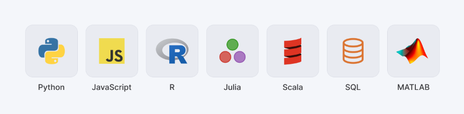
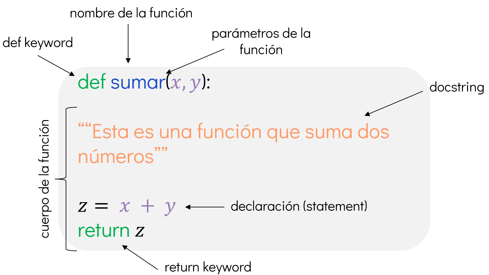

Fundamentos de Python#
Introducción#
En este capítulo, introducimos los conceptos básicos, operadores y estructuras de datos en Python.
Python es un lenguaje de programación, interpretado[1] y de propósito general[2]. Es conocido por su simplicidad y legibilidad. Python es ampliamente utilizado en diversas áreas, incluyendo desarrollo web, análisis de datos, inteligencia artificial y automatización de tareas.

Figura 1. Lenguajes y tecnologías comunes en ciencia de datos y análisis computacional.
Variables y asignación#
Los conceptos más básicos son los de variables y asignación. Asignamos valores a variables para guardar resultados intermedios en la memoria de la computadora y continuar procesándolos de forma incremental a lo largo del script. Veremos que las variables pueden almacenar valores de cualquier nivel de complejidad, desde números o cadenas simples, hasta arreglos, tablas, capas vectoriales o rásters.
La asignación en Python se realiza con el operador =:
A la izquierda del
=se especifica el nombre de la variableA la derecha del
=se indica el valor que se quiere asignar
Por ejemplo, la siguiente línea asigna el valor numérico 3 a una variable llamada x:
x = 3
Los nombres de variables pueden componerse de letras minúsculas ([a-z]), mayúsculas ([A-Z]), dígitos ([0-9]) y guiones bajos (_).
También ten en cuenta que los nombres de variables distinguen entre mayúsculas y minúsculas: por ejemplo, g y G son dos variables distintas.
Ahora podemos acceder al valor asignado a x en cualquier expresión posterior del script:
x
3
Asignar otro valor a una variable ya definida reemplaza su contenido anterior.
x = 7
7
Intentar acceder a una variable que no ha sido definida es un error común.
Por ejemplo, si no hemos definido una variable llamada z en ninguna parte del script, entonces al usar z se lanza un error:
# z ## Generará un error
Como puedes ver, las variables son nombres simbólicos que almacenan valores en memoria.
Podemos verificar si una variable existe (es decir, si está definida) usando la palabra clave in en el diccionario que devuelve la función incorporada globals():
'x' in globals()
También existe una función llamada locals() que devuelve las variables definidas dentro de un ámbito local.
Estas funciones son especialmente útiles al trabajar dentro de funciones.
Funciones#
Las funciones son bloques de código con un nombre particular y que realizan una tarea específica.
Las funciones en Python se ejecutan escribiendo su nombre seguido de paréntesis.
Dentro de los paréntesis puede haber cero o más argumentos (entradas de la función), separados por comas:
sort([3, 1, 2])
[1, 2, 3]
Construir una función es una forma de encapsular un bloque de código que puede ser reutilizado en diferentes partes del script. Las funciones pueden recibir argumentos y devolver resultados.

Figura 2. Anatomía de una función en Python. Se destacan los elementos clave: palabra reservada def, nombre y parámetros de la función, la cadena de documentación (docstring), el cuerpo de la función y la instrucción return. Cada parte está identificada para facilitar su comprensión.
En este curso no profundizaremos en la construcción de funciones, pero te dejo por acá la documentación oficial de Python para que puedas consultarla.
Tipos de datos#
Los tipos de datos son una parte fundamental de cualquier lenguaje de programación. En Python, los tipos de datos se dividen en dos categorías principales: atómicos y colecciones.
Tipo de dato |
Significado |
Nivel |
Mutabilidad |
Ejemplo |
|---|---|---|---|---|
|
Integer |
átomico |
inmutable |
|
|
Float |
átomico |
inmutable |
|
|
Boolean |
átomico |
inmutable |
|
|
None |
átomico |
inmutable |
|
|
String |
colección |
inmutable |
|
|
List |
colección |
mutable |
|
|
Tuple |
colección |
inmutable |
|
|
Dictionary |
colección |
mutable |
|
|
Set |
colección |
mutable |
|
Recuperado de: Dorman, M. (2025). Python Basis. En Spatial Data Programming with Python.
Int y float#
Los tipos int y float son los tipos numéricos en Python. Los números enteros (int) son números sin decimales, mientras que los números de punto flotante (float) son números con decimales.
Operadores aritméticos#
Los operadores aritméticos son símbolos que indican operaciones matemáticas a realizar con los operandos.
Los operadores aritméticos básicos son:
Operador |
Significado |
|---|---|
|
Suma |
|
Resta |
|
Multiplicación |
|
División |
|
Exponente |
|
división entera hacia abajo |
|
Módulo |
Recuperado de: Dorman, M. (2025). Python Basis. En Spatial Data Programming with Python.
Los operadores están asociados con las reglas de precedencia, que son similares y están de acuerdo con el orden de operaciones en matemáticas. Por ejemplo, como era de esperar, * tiene precedencia sobre +, por lo tanto:
3 + 4 * 5
23
Los cálculos pueden ser asignados a variables para mantener el resultado intermedio en memoria, en caso de que nuestro cálculo requiera varios pasos. Usando el operador de asignación y los operadores aritméticos, ya sabemos cómo escribir código Python que comprende varias expresiones. Por ejemplo:
x = 3
y = 4
z = x + y * 9
39
Asignación incremental#
La asignación incremental es una forma de asignar un nuevo valor a una variable, sumando o restando un valor específico al valor actual de la variable.
Por ejemplo, si tenemos una variable x con un valor inicial de 3, podemos incrementar su valor en 2 de la siguiente manera:
x = 3
x += 2
x
5
Ejemplo
Python también permite la asignación decremental (-=), la asignación multiplicativa (*=) y la asignación de división (/=).
Booleanos#
Los valores booleanos son un tipo de dato que solo puede tener dos valores: True o False. Estos valores son útiles para realizar comparaciones y tomar decisiones en el código.
Operadores lógicos#
Los operadores lógicos son símbolos que se utilizan para combinar o invertir valores booleanos. Los operadores lógicos más comunes son:
Operador |
Significado |
|---|---|
|
Y |
|
O |
|
No |
Recuperado de: Dorman, M. (2025). Python Basis. En Spatial Data Programming with Python.
Operadores de comparación#
Los operadores de comparación son símbolos que se utilizan para comparar dos valores y devolver un valor booleano (True o False). Los operadores de comparación más comunes son:
Operador |
Significado |
|---|---|
|
Igual |
|
No igual |
|
Menor que |
|
Menor o igual que |
|
Mayor que |
|
Mayor o igual que |
Recuperado de: Dorman, M. (2025). Python Basis. En Spatial Data Programming with Python.
None#
El tipo None es un tipo especial en Python que representa la ausencia de valor o un valor nulo. Se utiliza comúnmente para indicar que una variable no tiene un valor asignado o que una función no devuelve nada.
Cádenas de texto (strings)#
Las cadenas de texto (str) son secuencias de caracteres. Se pueden definir utilizando comillas simples (') o dobles ("). Las cadenas son inmutables, lo que significa que no se pueden modificar una vez creadas.
Listas#
Las listas (list) son colecciones ordenadas y mutables de elementos. Pueden contener elementos de diferentes tipos, incluyendo otros tipos de colecciones. Las listas se definen utilizando corchetes ([]).
mi_lista = [1, 2, 3, "Hola", True]
Las listas son mutables, lo que significa que puedes agregar, eliminar o modificar elementos después de haberlas creado.
Crear una lista vacía
Acceder a los elementos de una lista
Modificar elementos de una lista
Agregar elementos a una lista
Eliminar elementos de una lista
Slice de listas
Operadores de listas (+, *)
Tuplas#
Las tuplas (tuple) son colecciones ordenadas e inmutables de elementos. Se definen utilizando paréntesis (()). Al igual que las listas, pueden contener elementos de diferentes tipos.
mi_tupla = (1, 2, 3, "Hola", True)
Las tuplas son inmutables, lo que significa que no se pueden modificar una vez creadas. Sin embargo, puedes acceder a sus elementos de la misma manera que lo harías con una lista.
Diccionarios#
Los diccionarios (dict) son colecciones desordenadas y mutables de pares clave-valor. Se definen utilizando llaves ({}) y los pares clave-valor se separan con comas. Las claves deben ser únicas y pueden ser de cualquier tipo inmutable, como cadenas, números o tuplas.
mi_diccionario = {
"nombre": "Hannia",
"edad": 30,
"ciudad": "Madrid"
}
Acceder a los elementos de un diccionario
Modificar elementos de un diccionario
Agregar elementos a un diccionario
Eliminar elementos de un diccionario
Sets#
Los conjuntos (set) son colecciones desordenadas y mutables de elementos únicos. Se definen utilizando llaves ({}) o la función set(). Los conjuntos son útiles para realizar operaciones matemáticas como uniones, intersecciones y diferencias.
mi_set = {1, 2, 3, 4, 5}
Mutaciones y copias de código
En Python, las colecciones mutables (como listas y diccionarios) pueden cambiar después de su creación.
Cuando asignas una colección a otra variable (b = a), ambas apuntan al mismo objeto en memoria: cambiar b también cambia a.
Para evitarlo y trabajar con una copia independiente, usa métodos como b = a.copy().